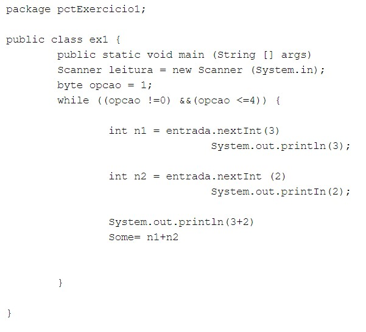
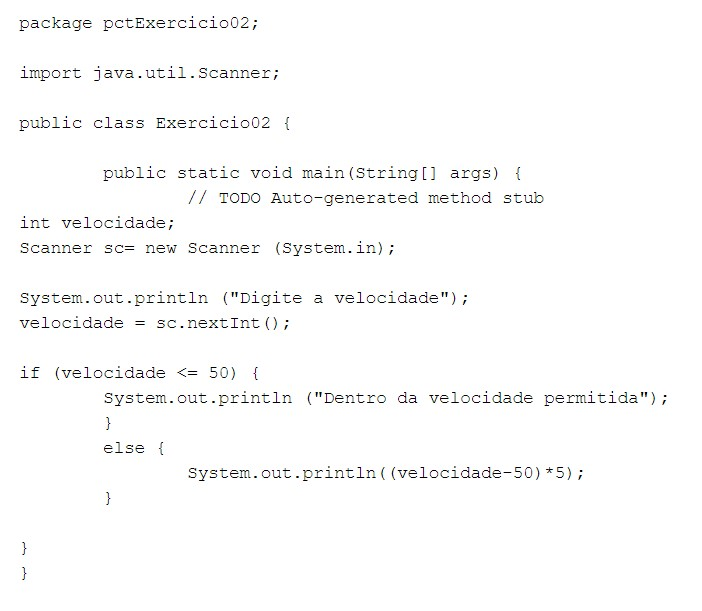
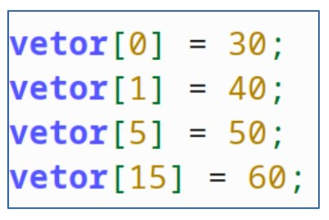
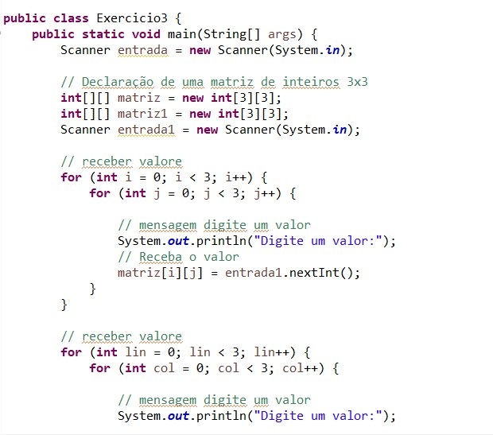
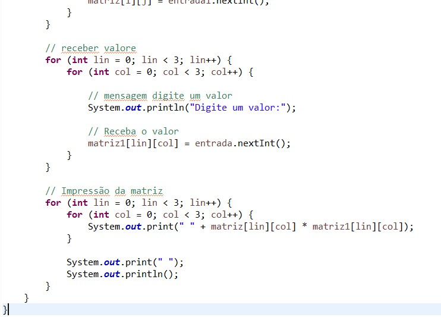

FPOO
While
O termo while pode ser traduzido para o português como “enquanto”. Este termo é utilizado para construir uma estrutura de repetição que executa, repetidamente.

If/else
A estrutura condicional if/else permite ao programa avaliar uma expressão como sendo verdadeira ou falsa e, de acordo com o resultado dessa verificação, executar uma ou outra rotina.

Vetor
Vetores são estruturas de dados que armazenam usualmente uma quantidade fixa de dados de um certo tipo.

Matriz
Uma matriz é um vetor de vetores, todos de mesmo tamanho.

